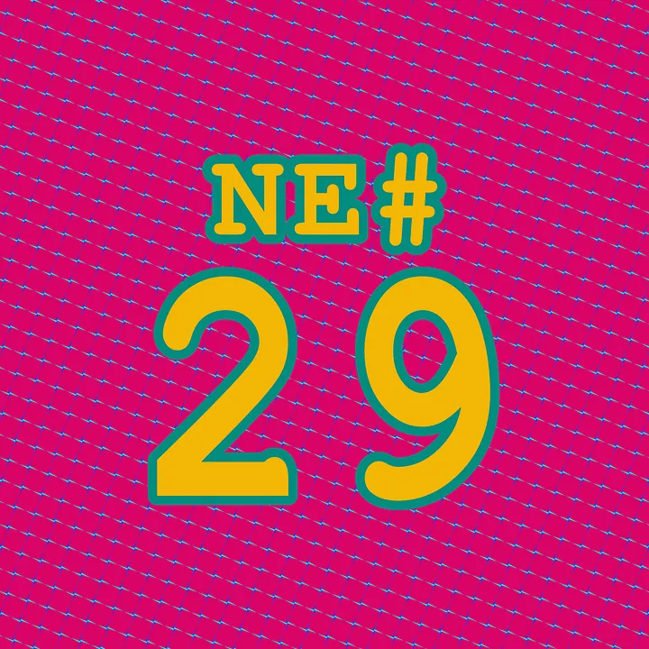

Die Nerd Enzyklopädie 29 - Programmieren mit Emojis

Texte bestehen aus Sätzen, Sätze bestehen aus Wörtern und Wörter bestehen aus Buchstaben bzw. genauer Schriftzeichen. Wir alle kennen es, das lateinische Alphabet, arabische Ziffern aber auch kyrillische Schriftzeichen oder die Sinogramme der chinesischen Schrift. All diese Symbole versteht der Computer dank einer großen Tabelle oder auch „ Zeichensatz“. Als Quasi-Standard hat sich in den letzten Jahren Unicode etabliert.
Hefte raus, Lerneinheit!
Ein Zeichensatz (engl. „character set“) beschreibt die Menge aller verfügbaren Zeichen. Das wäre z.B. ein sehr kleiner Zeichensatz, der nur die Großbuchstaben des lateinischen Alphabets darstellen kann:
[A, B, C, D, E, F, G, H, I, J, K, L, M, N, O, P, Q, R, S, T, U, V, W, X, Y, Z]
Wird jedem Zeichen eine numerische Position zugeordnet, der sogenannte. „codepoint“, spricht man von einem kodierten Zeichensatz („coded character set“). Uns kleines Biespiel sieht dann so aus:
1 -> A
2 -> B
3 -> C
…
26 -> Z
Sehr weit verbreitet ist der Zeichensatz UCS (Universal Coded Character Set), besser bekannt Unicode, der in der ISO 10646 definiert ist. Theoretisch umfasst Unicode einen Bereich von 1.114.112 codepoints. Diese sind in 17 Ebenen (planes) zu je 16 Bit aufgeteilt, also 65.536 codepoints pro Ebene. Aufgrund verschiedener technischer Vorgaben sind effektiv 1.111.998 codepoints nutzbar. Unicode enthält nicht nur die uns bekannten Buchstaben von A bis Z, Zahlen und Schriftzeichen anderer Sprachen, sondern mittlerweile auch Emojis:
😆🫠😇
Um jedes der über 1 Mio. Zeichen ansprechen zu können, kann man auf UTF-32 (Unicode Transformation Format) nutzen. UTF-32 besitzt einen 32 Bit (4 Byte) großen Adress-Bereich, um damit jedes beliebige Zeichen in Unicode zu kodieren. Das ist simpel, aber auch eine irrsinnige Platzverschwendung. Der häufigste deutsche Buchstabe „e“ wird wie folgt in UTF-32 kodiert:
00 00 00 65
In binär:
00000000000000000000000001100101
Ein Adress-Bereich mit 4 Byte um ein Zeichen abzubilden, für das 1 Byte ausreicht? Um Platz zu sparen, wurden Algorithmen entwickelt, die zwar etwas aufwendiger codieren, dafür aber weniger Platz verbrauchen. Sehr weit verbreitet ist UTF-8, eine — wenn man so will — „dynamische“ Kodierung.
UTF-8 wurde 1992 von Ken Thompson und Rob Pike entwickelt, zwei Programmierern des Betriebssystems Plan9 (benannt nach dem gleichnamigen Film „Plan9 from outer Space“ von Ed Wood, dem angeblich „schlechtesten Science Fiction Film aller Zeiten“) [WIKI14].
UTF-8 kodiert den ersten Bereich von Unicode mit 7 Bit — das erste Bit bzw. höchstwertige Bit ist immer 0. Das „e“ wird also folgendermaßen kodiert:
65
In binär:
01100101
Man belegt also nur noch 1 Byte anstatt 4. Will man exotische, also höherwertige Zeichen aus Unicode kodieren, hängt UTF-8 weitere Bytes an, bei denen die höchstwertigen Bits ebenfalls fest gesetzt werden. Das Euro-Zeichen wird in UTF-8 mit 3 Bytes dargestellt:
E2 82 AC
In binär:
11100010 10000010 10101100
Zurück zum Thema
Wie du siehst, sind Buchstaben für den Computer auch nur bestimmte Orte in einer großen Tabelle. Da die Unicode-Tabelle auch Emojis umfasst, sollte es doch eigentlich möglich sein, Emojis als Bezeichner für Funktionen und Variablen zu nutzen?
Ganz so leicht ist es leider nicht. Die gängigen Programmiersprachen haben einen festgelegten Bereich von Zeichen, die für derartige Deklarationen zulässig sind. Ein Ausweg sind Emoticons, also Zeichen, die als Emoji interpretiert werden können. Vor allem nicht-lateinische Schriften bieten eine Menge Möglichkeiten. In JavaScript ist z.B. folgendes möglich:
var ツ = „smile“;
var ൠ = „alien“;
function ಠ_ಠ (){console.log(“Viel Spaß beim Refactoring!”);}
Es gibt allerdings auch eine Programmiersprache, die ausschließlich auf Emojis basiert: Emojicode [EMOJI1]. Erfunden wurde die Sprache von Theo Weidmann. Und so sieht „Hello World“ in Emojicode aus:
🏁 🍇
😀 🔤Hello World!🔤❗️
🍉